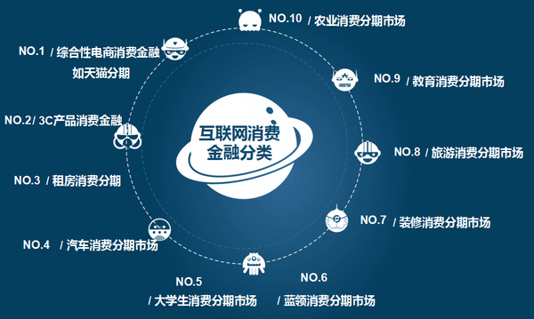
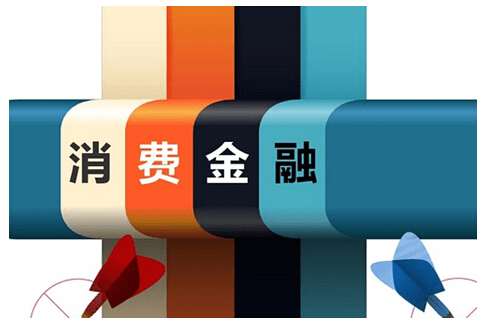

2017年布局消费金融业务，要知进退，要懂得取悦用户
前几日看到网上在探讨目前掌握一定数据资源的科技企业涉足消费金融业务的正确打开方式。就目前而言，还是布局消费金融业务的恰当时机吗？如果还有机会，应该怎么去做？
行业大趋判断：红海还是蓝海
进入一个新行业，最怕的便是进入一个已经走下坡路的夕阳行业，或者是一个已经进入寡头垄断期的成熟行业。对于消费金融行业而言，是很难产生寡头垄断的，那到底是蓝海还是红海呢？我认为，消费金融业务，既是红海，也是蓝海。
一是整体的蓝海，局部红海。整体上看，很多场景因为不够优质，所以消费借贷需求还得不到满足，但就局部几个场景来看，参与者众，竞争激烈。比如3C消费、家装、培训、教育、旅游、租房等领域，参与者众多，新进入者已经没有太多机会。
二是长期的蓝海，短期的红海。消费金融的发展要伴随着消费升级过程来逐步深化，从目前看，消费金融的发展速度远超居民收入上涨和消费升级的速度，短期内供过于求，是个红海；但长期看，随着消费升级的加速和市场空间的进一步释放，消费金融还是蓝海，还有巨大的增长空间。
找到好场景
消费金融业务本质上就是不断挖掘好的个人信贷资产过程，找到好资产是第一步。而消费金融本质上属于一种场景金融，找到好资产，最省力的办法便是依托好的场景。
什么是好场景呢？在我看来，应该至少满足这几个条件：
1、是市场总规模要足够大，能为企业提供广阔的发展空间；
2、模式要轻，即在获客与风控环节不需要投入太多的人力，这样企业能享受规模效应，即规模越大，边际成本越低；
3、模式可以复制，能够批量化拓展；
4、风险易量化、可防控。
基于上述四个标准，我们不妨逐一评判下目前主流的一些消费金融场景的优劣。
电商类场景（五颗星）。市场总规模够大，模式轻、可复制且风险易量化，属于典型的好资产，也是2013年以来，互联网消费金融崛起的起点。。
车贷（四颗星）。 市场规模足够大，易复制推广，风险也相对可控，但模式较重，也属于比较优质的资产。随着网贷限额新规的落地，车贷已经成为P2P平台转型的重要方向，也是各类消费金融机构的重点战场。
线下消费场景（三颗星）。 市场总规模足够大，但模式较重、可复制性差，业务环节较长，存在一定的风险隐患（如合谋欺诈）。不过，鉴于线下消费场景的市场总空间非常大，所以可以部分抵消这些弊端，整体上仍可视作一个不错的场景。
家装、医美、培训等场景（两颗星）。市场规模整体有限，且模式比较重，在获客环节需要投入大量人力，业务流程长，风控环节也存在很多隐患点，整体上不能算好的资产，有点鸡肋。
校园贷（一颗星）。受政策影响，市场规模严重受限，且模式重，声誉风险大，整体上属于不断萎缩的市场，不建议介入。
脱离场景，直接做现金贷业务是好的选择吗？
当然，也可以脱离场景，直接从现金贷业务着手。只不过，随着4月份以来监管层的强力介入，现金贷市场也变得扑朔迷离，不再是钱景光明的坦途。最大的难题就是起步阶段的破局。
其他一些注意事项
随着市场上同类别产品的增多，消费金融的竞争核心已经不在于金融而在于消费，能更好地服务于用户的消费体验和消费升级，才会真正赢得用户。对于每一家消费金融企业而言，无论是老玩家还是新进入者，都要着力在提升用户消费体验上进行产品的打磨。
那风控重不重要，当然重要，但只是对放贷企业重要，对用户而言并不重要。任何时候，给用户用户想要的，才是在红海中竞争获胜的唯一法宝。